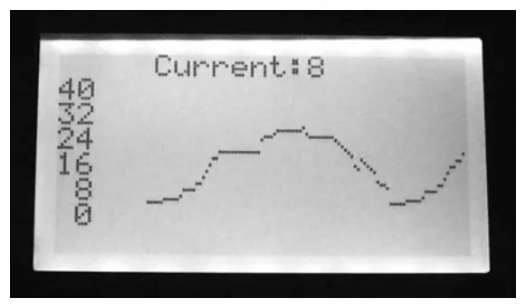

In this project, our goal is to measure the temperature once every 20 minutes and display the last 100 readings in a line graph. Each reading will be represented as a pixel, with the temperature on the vertical axis and time on the horizontal. The most current reading will appear on the left, and the display will continually scroll the readings from left to right. The current temperature will also be displayed as a numeral.
The Algorithm
Although it may sound complex, this project is fairly easy and actually requires only two functions. The first function takes a temperature reading from the TMP36 temperature sensor and stores it in an array of 100 values. Each time a new reading is taken, the previous 99 readings are moved down the array to make way for the new reading, and the oldest reading is erased. The second function draws on the LCD screen. It displays the current temperature, a scale for the graph, and the positions of each pixel for the display of the temperature data over time.
The Hardware
Here’s what you’ll need to create this project:
- One 128-by-64-pixel KS0108B graphic LCD module with pins for breadboard use
- One 10 kΩ trimpot
- One TMP36 temperature sensor
- Various connecting wires
- One breadboard
- Arduino and USB cable
Connect the graphic LCD as described in Table 7-1, and connect the TMP36 sensor to 5 V, analog 5, and GND.
The Sketch
Enter and upload the following sketch, which also includes relevant comments about the functions used.
// Project 27 - Creating a Temperature History Monitor
#include <glcd.h> // include the graphics LCD library
#include <fonts/SystemFont5x7.h> // include the standard character fonts for it
int tcurrent;
int tempArray[100];
void setup()
{
GLCD.Init(NON_INVERTED); // configure GLCD
GLCD.ClearScreen(); // turn off all GLCD pixels
GLCD.SelectFont(System5x7);
}
void getTemp() // function to read temperature from TMP36
{
float sum = 0;
float voltage = 0;
float sensor = 0;
float celsius;
// read the temperature sensor and convert the result to degrees C
sensor = analogRead(5);
voltage = (sensor * 5000) / 1024;
voltage = voltage - 500;
celsius = voltage / 10;
tcurrent = int(celsius);
// insert the new temperature at the start of the array of past temperatures
for (int a = 99 ; a >= 0 ; --a )
{
tempArray[a] = tempArray[a-1];
}
tempArray[0] = tcurrent;
}
void drawScreen() // generate GLCD display effects
{
int q;
GLCD.ClearScreen();
GLCD.CursorTo(5, 0);
GLCD.Puts("Current:");
GLCD.PrintNumber(tcurrent);
GLCD.CursorTo(0, 1);
GLCD.PrintNumber(40);
GLCD.CursorTo(0, 2);
GLCD.PrintNumber(32);
GLCD.CursorTo(0, 3);
GLCD.PrintNumber(24);
GLCD.CursorTo(0, 4);
GLCD.PrintNumber(16);
GLCD.CursorTo(1, 5);
GLCD.PrintNumber(8);
GLCD.CursorTo(1, 6);
GLCD.PrintNumber(0);
for (int a = 28 ; a < 127 ; a++)
{
q = (55 - tempArray[a-28]);
GLCD.SetDot(a, q, BLACK);
}
}
void loop()
{
getTemp();
drawScreen();
for (int a = 0 ; a < 20 ; a++) // wait 20 minutes until the next reading
{
delay(60000); // wait 1 minute
}
}The Result
The resulting display should look something like Figure 7-10.

Modifying the Sketch
Some people can better interpret data in a visual way instead of just reading numbers. This type of project could also be used to display other kinds of data, such as the voltage from various sensors as measured by analog input pins. Or you could add another temperature sensor and show both values at once. Almost anything that returns a value can be displayed using the graphic LCD module.